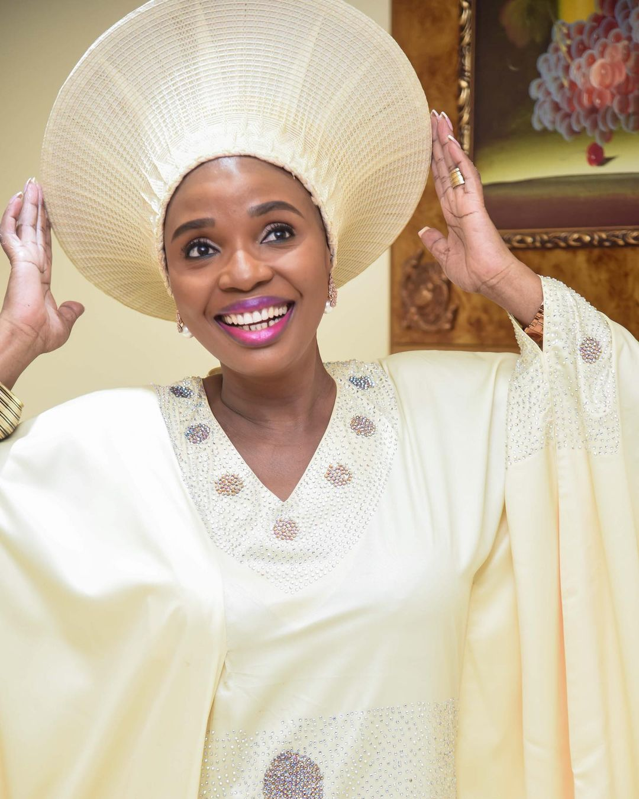

In loving memory of
Pastor Nomith Odukoya
1974-2021Biography
Nomthi Odukoya was an educationist, life coach and writer. She was the Associate Senior Pastor of The Fountain of Life Church, Lagos, Nigeria under the leadership of her husband, Pastor Taiwo Odukoya. Pastor Nomthi as she was fondly called, is passionate about building wholesome and integrated family life with focus on: raising Godly (spiritual) and socially responsible children, and ministers hope and healing to women of different strata (singles, married, single parents etc).
Pastor Nomthi was born in South Africa on the 30th of May,1974. Her full names are Rosemary Nomthandazo(Nomthi) Siyangele Odukoya. She attended University of KwaZulu-Natal,durban,South Africa and obtained a Higher Diploma in Education from 1996-1999. She later obtained Masters in Global Human Resource Management from University of liverpool (2010-2012)
She is the author of the fast selling children books, “No! Don’t touch me there”, “A bully is not a hero”, “Help! They are fighting again”, “Boys and girls are different but equal”, “Children saving the planet”, “Some children have additional needs” and “How to be safe online”. These books empower children to confront any form of abuse or social ills.
She was the Chairperson of Fountain Initiative for Social Development (FISD), a faith-based, non-profit organization committed to entrepreneurial development and empowerment of underprivileged individuals and communities across Nigeria. Pastor (Mrs.) Nomthi Odukoya was also the Founder and Chairman of Funda Wazi Foundation, a non-profit organization committed to providing child-friendly resources and trainings to equip children and adults with a view to ensuring children’s safety and wellbeing.
Read more about her here.
The life of everything created is in seasons and phases, and each phase or season has its own peculiarities and challenges.